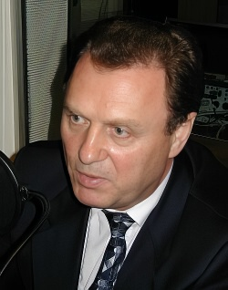

Иван Рыбкин о ЧечнеПрограмму ведет Петр Вайль. С бывшим спикером Государственной Думы России Иваном Рыбкиным беседовал Олег Кусов. Петр Вайль: Российские власти заявили о плановом сокращении численности группировки на территории Чечни. Однако боевые действия и вооруженные диверсии в республике не прекращаются. Кремль продолжает делать ставку на силовое решение проблемы, отказываясь от начала переговоров с лидерами чеченского сопротивления. К таким переговорам несколько дней назад призвал российского президента бывший спикер Государственной Думы России Иван Рыбкин, в середине 90-х один из ключевых участников мирного процесса в Чеченской Республике. С Иваном Рыбкиным в Московской студии Радио Свобода беседовал наш обозреватель Олег Кусов:. Олег Кусов: Ивана Рыбкина после публикации открытого письма Владимиру Путину перестали принимать даже соратники по Социалистической партии - решением коллег по партии членство в ней Ивана Рыбкина было приостановлено буквально на следующий день после публикации этого письма. Нелицеприятное заявление в адрес Ивана Рыбкина сделал и помощник президента России Сергей Ястржембский. В очередной раз Кремль дал понять российской политической элите - кто не с нами, тот против нас. Чечня остается опасной темой для обсуждения, но Иван Рыбкин выбрал ее намеренно.. Иван Петрович, почему сегодня вы обратились к теме Чечни?  Иван Рыбкин: Просто "накипело". Я очень внимательно наблюдаю за развитием ситуации в Чеченской Республике и вокруг нее, за ходом так называемой контртеррористической операции. Я помню очень хорошо, что было заявлено, что в течение 2-3 недель со всеми этими делами будет покончено. И тогда, в августе 1999-го года, я сказал, что мой горький опыт говорит - ни за две, ни за три недели; ни за два, ни за три месяца; ни даже за два года это сделано не будет. Надо иметь чувство меры, и надо уметь вовремя остановиться. Да, отпор тем, кто напал на Дагестан, был справедлив. И все поддержали: не было ни одного гласа против, а вот что дальше творится... Раз за разом говорится, что уничтожены тысячи мятежников, тысячи боевиков. "Тысячи, тысячи", а они все из пепла возникают и воюют с федеральными войсками. И уже тысячи и тысячи похоронок пришли в дома россиян. Если говорить об эмоциональной стороне дела, это, конечно, гибель Александра Ивановича Лебедя, которого очень усердно в последние месяцы жизни буквально "оттаптывали" за заключение Хасавьюртовского соглашения... И если некоторые прошли, я считаю, по недосмотру, может быть, кого-то, с их точки зрения, я-то считаю, правильно сделали журналисты, что показали: показывают сюжет об уничтожении очередного отряда боевиков, как говорят, крупного, и растерянный высокопоставленный военный говорит: "Посмотрите, пятнадцати-, шестнадцатилетние мальчишки". То есть, за это время конфликта из трех-четырехлетних мальчишек появились "пионеры-герои" в Чечне, которые, уверяю вас, почитаемы. Это очень опасная вещь - это закладывается ненависть лютая уже для наших детей и внуков. Вот это уже было последней каплей, которая переполнила чашу терпения, и я решил высказаться и сказать: "Господа, товарищи, друзья, коллеги! Остановитесь!". Есть Аслан Масхадов. Как бы его там ни не любили, ни не уважали - он избирался народом Чечни. За него проголосовало подавляющее большинство чеченцев; он, наверное, совершил много ошибок, но за ним есть определенные группы людей, которые с оружием в руках воюют, которые сопротивляются - значим, с ним надо договариваться. Ахмад Кадыров, Станислав Ильясов, если на то будет добрая воля президента России Владимира Путина, достаточно быстро найдут общий язык за столом переговоров, как выстроить мирную жизнь в Чечне с Асланом Масхадовым и другими.. Олег Кусов: А вам известна реакция на ваше письмо в Кремле?. Иван Рыбкин: Знаю опосредованно, как многие радиослушатели, телезрители, только из той реплики, которую обронил Сергей Владимирович Ястржембский. Сергей Ястржембский для меня не авторитет. Я не хочу его унижать, но могу сказать, что человек, который занимается проблемой весьма и весьма издалека, и, тем более, дозируя, урезая, занимаясь цензурой в плане информации о Чечне. И который, скажу грубо, как я и мне подобные друзья из моей команды, в нашей шкуре не побывал, с этими дядями бородатыми, очень часто с мутным взглядом, один на один не разговаривал - один и без оружия, без всяких войск, охраны, без всего - не "покушав" такого, говорить о том, что он что-то понимает в Чечне - ничего он там не понимает. Он оберегает свою должность - завтра поставят на другой пост, как раньше перемещали с директора амбара на директора лабаза, потом на директора школы и директора бани - так и будет заниматься. За народ, за ситуацию отвечает президент, все будут забыты: Ивановы, Петровы, Сидоровы, Ястржембские, а то, что сделал президент Путин в Чечне, будут помнить, и запишут или так, или так в архив президента.. Олег Кусов: Создается впечатление, что и общественность, и российская пресса очень вяло прореагировали на ваше обращение. Как вы это объясняете?. Иван Рыбкин: Каток некого правления информации, он прошелся по абсолютному большинству теле- и радиоканалов, и по газетным страницам - я свои размышления не только в "Коммерсантъ" направлял, но и в другие издания - они же не опубликовали. В Чечне пора бы завершать сюжеты с военным, силовым решением; силовые варианты присущи многим. В приватных беседах говорят так, а "указанка" говорит о другом: кого на экран пускать, кого не пускать; кому полосу газеты давать, кому не давать; какая тема открыта для печати, для размышления, для обсуждения - что вполне естественно для демократического общества - а какая тема закрыта. Вот этот режим "держать и не пущать " - он, конечно, сказывается. Я встречаюсь с руководителями агентств очень крупных наших информационных - они со мной душа в душу говорят. Эта боязнь, эта опасливость, этот испуг, он государству очень дорого может стоить. Олег Кусов: Иван Петрович, как вы понимаете сегодняшнюю политику Кремля в Чечне?. Иван Рыбкин: Я как-то в одном из комментариев по поводу моего открытого письма президенту России Владимиру Владимировичу Путины услышал, что, наверное, Иван Рыбкин написал это все от безысходности. Я не от безысходности это все написал - я написал то, что внутри меня очень долго накапливалось, и накипело. То, что разделяют мои друзья по команде, с которой я работал по Чечне; о чем размышляют люди, думающие во власти и вне власти России сегодня, мыслящие люди. А вот политика, как вы говорите, Кремля припахивает безысходностью. У меня такое ощущение, что не знают, что дальше делать: делают по инерции то, что делалось. Попытка восстановить, возродить экономику Чечни, она тоже наталкивается на то, что входит в противоречие с громадным присутствием там военных, потому что львиная доля расходов идет на военные цели. Попытка как-то решить вопрос с беженцами сталкивается с присутствием большого количества войск в Чечне - тоже безысходность. Люди не хотят возвращаться, потому что очень часто попадают под нож "зачисток", "чисток" и всего прочего - боятся уходить. Желание и, опять же, присутствие большого количества военных там предполагает априори простое решение - взять их, силой переселить, водворить на место прежнего проживания, не считаясь с тем, что думают люди, как они считают, как они будут там обустраивать жизнь. Вот все и сразу - подход нам знакомый, мы знали, как действовали прежде в иные годы. Мне кажется, потеряна нить размышлений по этому поводу. Те люди, которые размышляли, действительно дарили какие-то мысли президенту, они отдалились в силу того, что чувствуют, что события развиваются не в ту сторону. Не две, не три недели, уже годы прошли, и уже не 3-4 сотни погибших, и этому нет конца.... Олег Кусов: Это был Иван Рыбкин, бывший секретарь Совета Безопасности России. Его миротворческий опыт на Северном Кавказе, похоже, никого из российских политиков не интересует.. |